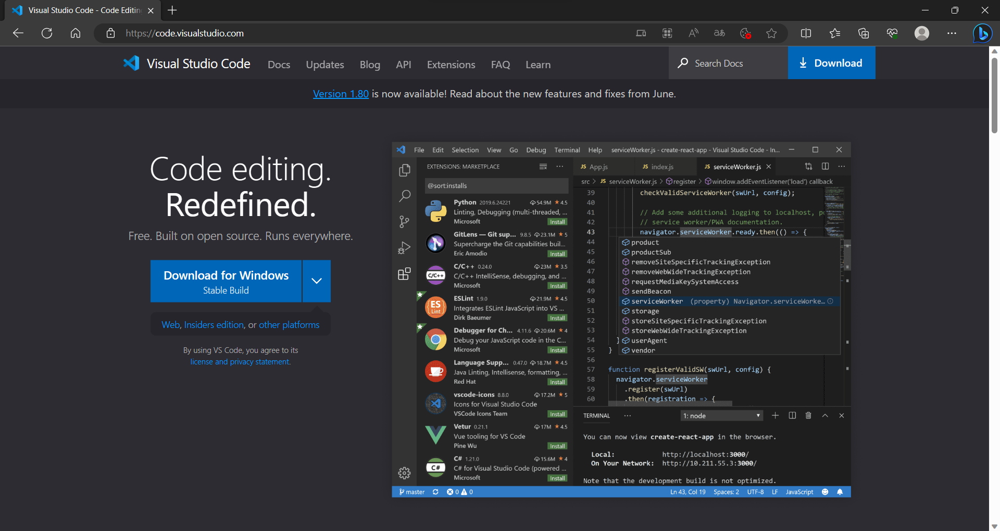
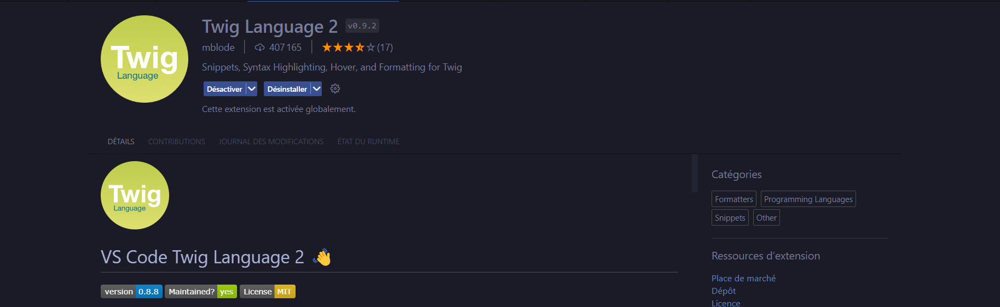
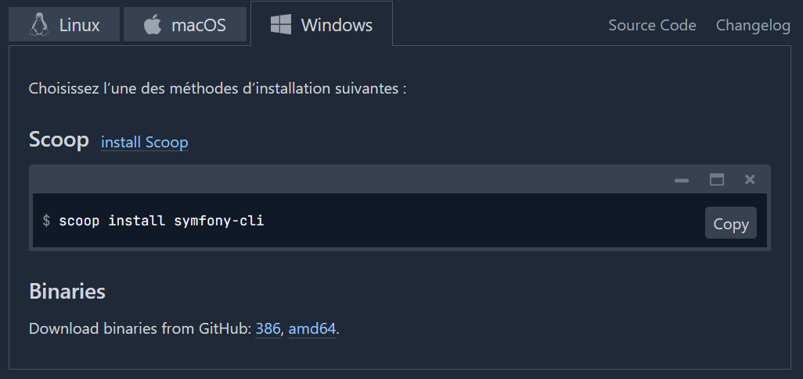
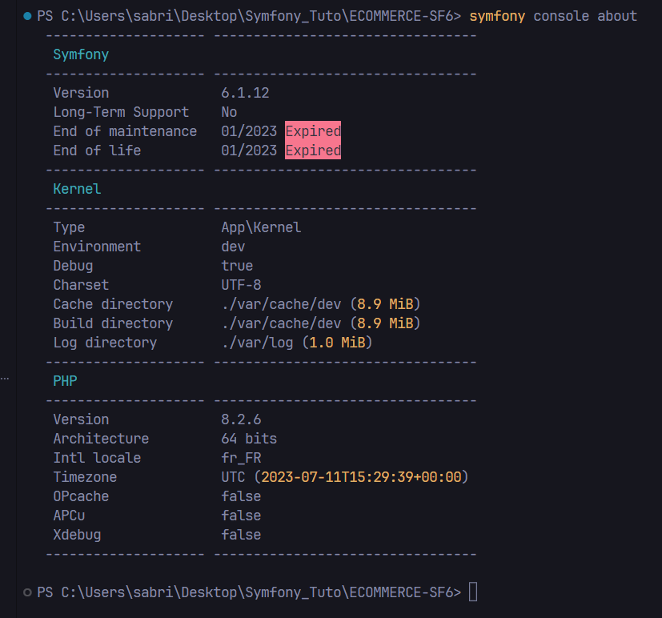
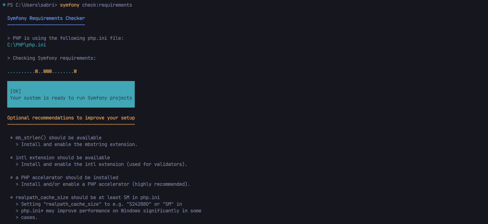
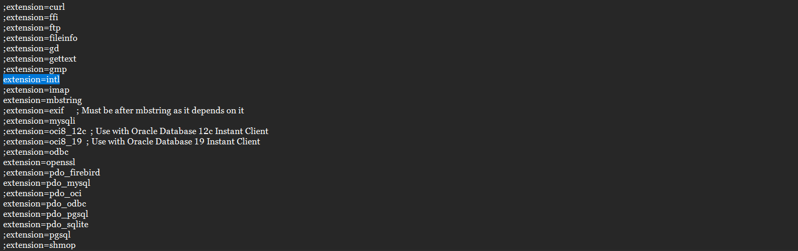
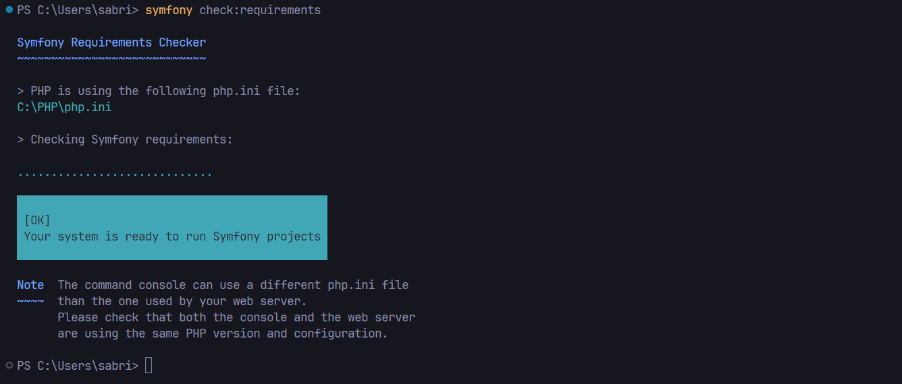
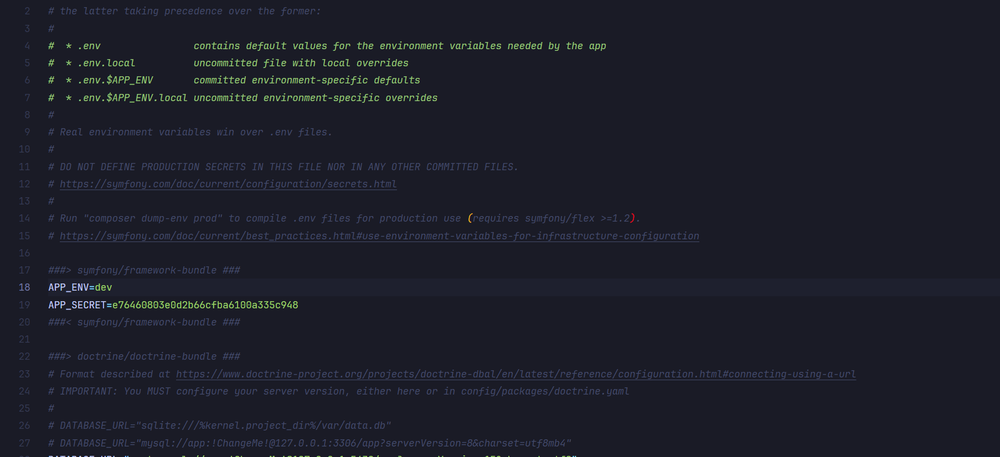
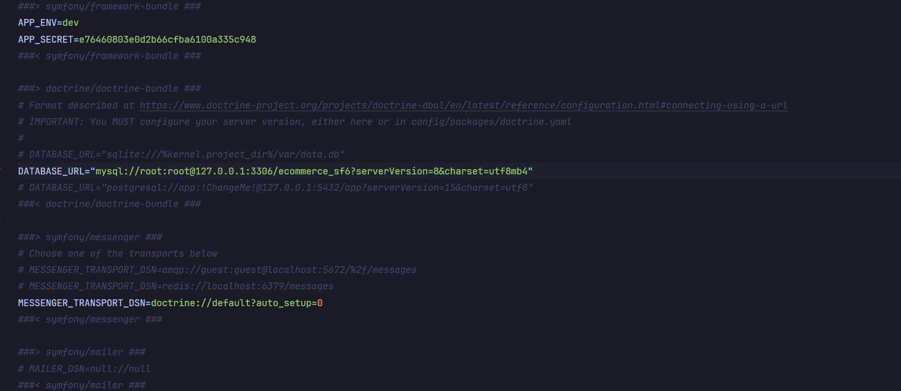

Pré-requis
Pour pouvoir commencer ce tutoriel, il vous faut quelques pré-requis :
-
Installation de Visual Studio Code
Visual Studio Code est un éditeur de code source qui peut être utilisé avec une variété de langages de programmation, notamment Java, JavaScript, Go, Node.js et C++. Il est basé sur le cadre Electron, qui est utilisé pour développer des applications Web Node.js qui s'exécutent sur le moteur de présentation Blink.
Vous le trouverez en cliquant sur ce lien : https://code.visualstudio.com/
Extentions et paramètrage de VSCode
Dans Visual Studio Code, rendez-vous dans la page des extensions, ou en tapant directement Ctrl+Maj+X.
Dans la barre de recherche entrez les extentions suivantes et installez-les et activez-les un par un :
- PHP DocBlocker
- Twig Language 2
- PHP Namespace Resolver
- Git Graph
Twig est un moteur de templates pour le langage de programmation PHP, utilisé par défaut par le framework Symfony. Il a été inspiré par Jinja, moteur de template Python.
Il faut préciser à VSCode de considérer l’extension .twig comme l’extension .html :
- Allez dans Fichier > Préférences > Paramètres, ou tapez Ctrl+,
- Tapez dans la barre de recherche "emmet" puis dans l'onglet "emmet include langage", ajouter la clé twig = html
Installation de PHP
PHP est un langage de script utilisé le plus souvent côté serveur. Dans cette architecture, le serveur interprète le code PHP des pages web demandées et génère du code (HTML, XHTML, CSS par exemple) et des données (JPEG, GIF, PNG par exemple) pouvant être interprétés et rendus par un navigateur web. PHP peut également générer d'autres formats comme le WML, le SVG et le PDF.
Vous le trouverez en cliquant sur ce lien : https://www.php.net/
Installation de Composer
C'est un gestionnaire de dépendances insdipensable à l'utilisation du framework Symfony.
Vous le trouverez en cliquant sur ce lien : https://getcomposer.org/
Téléchargez et exécutez Composer-Setup.exe. Il installera la dernière version de Composer et configurera votre PATH de Windows afin que vous puissiez appeler Composer depuis n'importe quel répertoire de votre ligne de commande.
Installation de Symfony 6
-
Installation de Symfony CLI
Tout d'abord verifiez les versions installées de PHP et de Composer
Entrez la ligne suivante dans un terminal comme cmd.exe de Windows ou dans le terminal de Visual Studio Code :
- php -v
Pour installer Symfony 6, il faut la version 8.0.2 de PHP ou superieur.
Si la commande php n’est pas reconnue, il faut vérifier le PATH dans les variables
d’environnement et modifier ou ajouter le chemin vers le dossier de l’exécutable souhaité.
Voici un lien qui vous explique comment modifier les variables d'environnement sur Windows : https://learn.microsoft.com/fr-fr/iis/application-frameworks/install-and-configure-php-on-iis/install-and-configure-php
Entrez la ligne suivante dans un terminal comme cmd.exe de Windows ou dans le terminal de Visual Studio Code :
- composer -v
Si le retour de ligne vous renvoie un numero de version comme l'image ci-dessus, alors l'installation de Composer s'est bien passée.
Ensuite vous devez installer Scoop, voici le lien du site : https://scoop.sh/
Entrez les deux lignes successivement dans un terminal comme cmd.exe de Windows ou dans le terminal de Visual Studio Code :
- Set-ExecutionPolicy RemoteSigned -Scope CurrentUser # Optional: Needed to run a remote script the first time
- irm get.scoop.sh | iex
La CLI Symfony est un outil de développement pour vous aider à créer, exécuter et gérer vos applications Symfony directement depuis votre terminal. C'est une Open-Source, qui fonctionne sur macOS, Windows et Linux, et vous ne devez l'installer qu'une seule fois sur votre système.
Entrez la ligne suivante dans un terminal comme cmd.exe de Windows ou dans le terminal de Visual Studio Code :
- scoop install symfony-cli
Vous le trouverez en cliquant sur ce lien : https://symfony.com/ dans l'onglet Download.
Verifiez la version installée de Symfony CLI
Entrez la ligne suivante dans un terminal comme cmd.exe de Windows ou dans le terminal de Visual Studio Code :
- symfony -v
Voilà tout est prêt, vous pouvez commencer votre projet, en l'occurence créer un site Web.
Création d'un nom de projet
Vous allez devoir créer un projet avec Symfony sur Visual studio Code.
Pour cela il y a 4 manières possibles de faire.
Tapez ces commandes dans le terminal de VSCode :
- symfony new nom_du_projet
- composer create-project symfony/skeleton nom_du_projet
- symfony new --full nom_du_projet
- composer create-project symfony/website-skeleton nom_du_projet
Ces commandes créent un dossier avec le nom "nom_du_projet", et récupèrent plusieurs outils dont l'outil composer.json.
Cet outil va installer les composants de bases nécessaires et minimalistes pour la création d'un site web.
Les deux dernières commandes créent les mêmes composants que les premières, mais rajoutent d'autres dossiers en plus pour votre projet web.
Neanmoins il est préférable d'utiliser les commandes "composer" pour la création de son projet.
Pour verifier la version "Symfony" installée, il suffit de taper la commande symfony console about.
Nous voyons la version de Symfony : V.6.1.12 et la version de PHP : V.8.2.6
Vous pouvez aussi installer Symfony avec différentes versions pour cela, il faudra taper ces commandes :
- symfony new --webapp nom_du_projet --version=lts pour la version lts.
- composer create-project symfony/skeleton nom_du_projet 5.4.* pour la version 5.4.*.
Vérification du projet créé
Faites une vérification du projet créé avec la commande symfony check:requirements
Vous obtiendrez ces informations :
Les W représentent des erreurs à rectifier si possible. Par exemple :
- * intl extension should be available
> Install and enable the intl extension (used for validators).
Pour cela ouvrir votre fichier "php.ini", qui se trouve dans le répertoire de PHP, avec un éditeur de texte, ensuite recherchez en tapant directement "Ctrl+F" le terme "intl", puis décommentez l'extension en supprimant le ";" ou rajoutez l'extension si vous ne le trouvez pas.
Lorsque tout est OK et qu'il n'y a plus de messages d"erreurs, alors pour symfony tout est opérationnel et vous aurez cette fenêtre :
Architecture du projet
Voici l'architecture que vous devez avoir après toutes les installations, configurations et vérifications.
- bin : ce dossier contient les exécutables de Symfony, comme le fichier console.
- config : bon, là le nom du dossier parle de lui-même. Il contient tous les fichiers de configuration de Symfony ainsi que les dépendances que vous installerez plus tard.
- public : c'est le point d'entrée de votre site Web, mais c'est aussi ici que vous stockerez tous vos "assets" (images, css, javascript...).
- migrations : là se retrouvent des fichiers permettant de créer ou de mettre à jour la base de données.
- src : c'est ici que toute votre logique métier sera traité ! Il contient notamment les controllers, les entités, les formulaires...
- templates : vous pourrez exprimer votre talent de designer dans ce dossier. Toutes les vues sont concentrées ici.
- tests : tous vos tests unitaires et fonctionnels seront regroupés dans ce dossier.
- var : Symfony se chargera d'y stocker le cache et les logs de l'application.
- vendor : ce dossier contient toutes les dépendances installées avec Composer.
- .env : ce fichier regroupe les différentes variables d'environnements de l'application.
Configuration du dossier d'environnement
Nous allons configurer maintenant l'environnement de notre projet
Copiez le dossier .env et renommez le .env.locale.
Comme nous sommes en développement, la ligne APP_ENV=dev reste en dev, mais dès lors que l'on sera en production on changera cette ligne en APP_ENV=prod.
La ligne APP_SECRET= * , servira au jeton CSRF Pour la validation des formulaires, à modifier lors du passage en production.
Pour la configuration de la base de données :
- Commentez la ligne "postgresql" avec un #
- Décommentez la ligne "mysql" en retirant le #
- Changez les paramètres de connexion avec votre nom d'utilisateur et votre mot de passe de connexion à mySQL
- Changez le nom de votre base de données par celui que vous aurez choisi
- Changez le numéro de la version de mySQL 
Démarrage du serveur
Vous avez la possibilité de démarrer un serveur avec Symfony afin de tester votre projet :
symfony serve symfony server:log
Il est tout à fait possible de faire la même chose avec une autre commande, mais Symfony ne la recommande plus. D'ailleurs, ils ont retiré la dépendance nécessaire à son fonctionnement. Faites l'essai en lançant cette commande :
php bin/console server:start
En cas d'erreur, installez via composer le serveur :
composer req server
Il ne vous reste qu'à ouvrir votre navigateur et à entrer l'adresse qu'affiche votre terminal, qui est normalement : http://127.0.0.1:8000.
Attention, le serveur Web tourne directement via le terminal, donc si vous fermez le terminal, vous coupez le serveur !